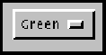

java.lang.Object
|
+----java.awt.Component
|
+----java.awt.Choice
public class Choice
extends Component
implements ItemSelectable
The Choice class presents a pop-up menu of choices. The current choice is displayed as the title of the menu.
The following code example produces a pop-up menu:
Choice ColorChooser = new Choice();
ColorChooser.add("Green");
ColorChooser.add("Red");
ColorChooser.add("Blue");
After this choice menu has been added to a panel, it appears as follows in its normal state:

In the picture, "Green" is the current choice. Pushing the mouse button down on the object causes a menu to appear with the current choice highlighted.